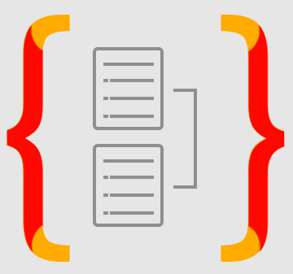

HTML

Soy programadora Full Stack Developer enfocada en el desarrollo Backend,
apasionada por crear soluciones innovadoras y eficientes. Mi experiencia
profesional incluye un bootcamp donde he trabajado con tecnologías como
NestJS, Express, TypeScript y JavaScript, TypeORM e implementado bases de
datos como PostgreSQL y SQL para la creación de sistemas relacionales,
además de un chat con IA de Meta.
Durante mi formación, desarrollé proyectos que abarcan desde una página web
en HTML y CSS hasta un sistema completo para la gestión de un gimnasio.
Además, este bootcamp me permitió ser mentora de otros estudiantes,
haciendo su camino más agradable y dándome la capacidad de enseñar y
apoyar.
Mi experiencia laboral va desde trabajar como mesera en un restaurante, afinando mis habilidades de
comunicación y trabajo en equipo, hasta una pasantía en una planta industrial y un rol en un centro
de llamadas bilingüe enfocado en ventas cruzadas. Mis fortalezas como programadora y persona
incluyen una alta comunicación asertiva y adaptabilidad a diferentes personalidades, lo que hace que
el trabajo en equipo sea ameno.
Actualmente, estoy en mi noveno semestre terminando mi carrera profesional en Ingeniería en Sistemas
y trabajando como Asistente de Enseñanza en un bootcamp de desarrollo full stack, donde aplico y
aumento continuamente mis conocimientos en tecnologías de backend.
Mi objetivo es consolidarme como desarrolladora backend, liderando proyectos que desafíen mis
habilidades y amplíen mi conocimiento de nuevas tecnologías. Busco oportunidades que me permitan
profundizar en soluciones backend escalables y seguras, contribuyendo significativamente al
crecimiento tecnológico y al éxito de la organización .
Estas son las tecnologias que mas suelo usar.
HTML
CSS

JavaScript

NestJs

Posgresql
TypeScript

MongoDB

Vercel
TypeORM
MercadoPago
Swagger

Cloudinary
Estas son las Actividades que mas disfruto hacer